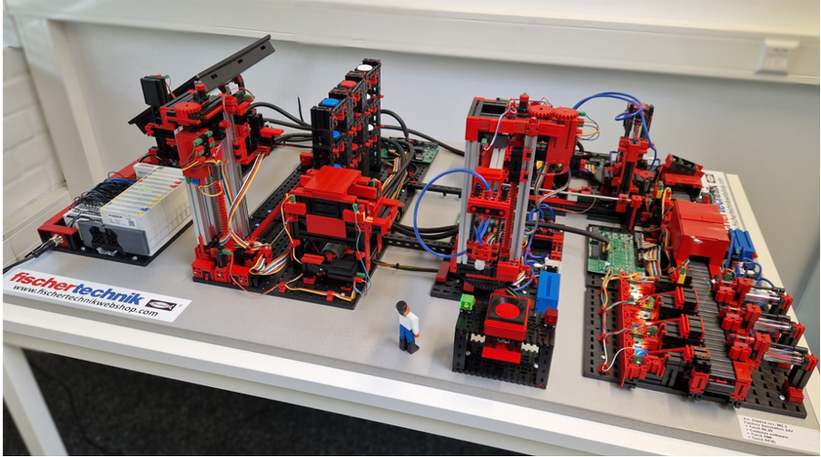

Monitoring systems
Develop robust monitoring across components and systems.
ZERO DOWNTIME FOR CYBER-PHYSICAL SYSTEMS
ZORRO brings research and industry together to make complex systems easier to understand, diagnose and maintain.
From monitoring and knowledge representation to diagnostic algorithms and systems engineering, the project explores how to identify the causes of failures and reduce downtime.

A MULTIDISCIPLINARY CONSORTIUM
ZORRO is funded by NWO and brings together academic, research and industrial partners.
University of Twente
Vrije Universiteit Amsterdam
Saxion University of Applied Sciences
TNO-ESI
NWO
ASML · Canon Production Printing · ITEC · Philips · Thermo Fisher Scientific
THE PROJECT
Each work package addresses a different part of intelligent diagnostics and its application.
Develop robust monitoring across components and systems.
Make knowledge explicit and reusable for more effective diagnostics.
Explore WP2 researchDevelop system-level diagnostic methods for practical settings.
Develop models and languages for intelligent diagnostics.
Integrate project results in use-case demonstrators.
Explore the factoryShare results and support their adoption in practice.
Coordinate the project and monitor its progress.
WP5 · INTEGRATION IN PRACTICE
The Fischertechnik factory is a shared demonstrator for bringing progress from ZORRO’s work packages together.
Explore its modules and sensors, then discover the models and knowledge tools that help describe and investigate the system. The demonstrator connects research methods with questions that matter in industrial practice.